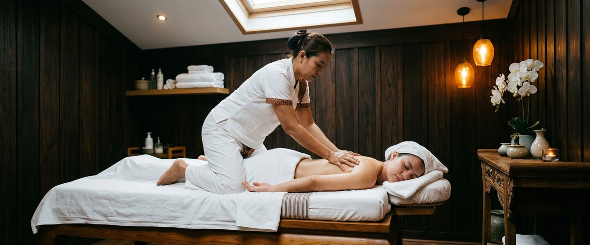
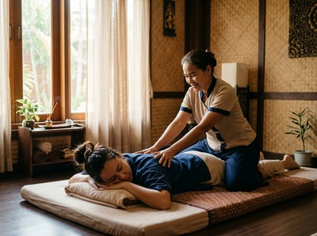

If you've looked at our treatment menu and wondered what sets Thai oil massage apart from the traditional version, you're not alone.

It's one of the questions we hear most often at Glasgow Thai Massage. Both treatments share the same ancient roots, but they feel quite different on the table — and choosing between them comes down to knowing what each one actually does.
Thai oil massage is built on the same principles as traditional Thai massage: working along the body's sen energy lines, which are pathways believed in Thai healing tradition to carry the flow of energy through muscles, joints, and organs. The difference is in the delivery. Where traditional Thai massage uses thumb pressure, palms, and assisted stretching on a fully-clothed client, the oil version uses warmed oil to allow longer, gliding strokes along those same sen lines.

The addition of oil changes the texture of the session entirely. Instead of compression and stretch, the dominant technique becomes slow, sustained strokes with thumbs, palms, forearms, and elbows travelling the length of the body. The pressure can still be firm and therapeutic — this is not the light, rhythmic effleurage of a standard Swedish massage.
You'll undress to your underwear and lie on a comfortable treatment table, with towels used throughout to maintain your privacy. Your therapist will warm the oil before applying it, which adds a gentle heat that begins relaxing surface muscle tension from the very first touch.
From there, the session typically works through the whole body: legs and feet, back, arms, shoulders, and neck. At Glasgow Thai Massage, the therapist incorporates elements of acupressure and selective assisted stretching alongside the oil strokes, so the treatment still carries that distinctly Thai character even without the full mat-based stretching sequence. You can book your session online to choose the duration that suits you.
The result is a treatment that sits between deep relaxation and genuine therapeutic work. It's more soothing than traditional Thai massage, but more structured and purposeful than a standard spa oil massage.
The oil does more than make the strokes feel smooth. When applied with sustained pressure, it allows the therapist to reach deeper layers of soft tissue with less discomfort than dry-pressure techniques. This makes Thai oil massage particularly useful for people who hold tension across the back, shoulders, and thighs but find firm acupressure too intense.
Circulation is one of the clearest benefits. The combination of warmth, oil, and sustained strokes encourages blood flow through the muscles, which supports tissue recovery and can help reduce the kind of chronic fatigue that builds up across long working weeks. For Glasgow office workers spending eight or more hours at a desk, that circulatory boost is genuinely noticeable.
Skin condition benefits from regular sessions too. Quality massage oils nourish and soften the skin during the treatment, leaving it in noticeably better condition than when you arrived — a small but appreciated bonus.
The simplest way to think about it is this: traditional Thai massage is more dynamic, while Thai oil massage is more flowing. Traditional Thai uses no oil and is done fully clothed on a floor mat. It involves significant assisted stretching, joint mobilisation, and deep acupressure — and it can feel almost like a assisted yoga session. It's the better choice when flexibility, range of motion, or specific muscle tension are the main concerns.
Thai oil massage, by contrast, is the treatment to reach for when you want deep relaxation alongside therapeutic pressure. It's warmer, slower, and more immersive. People dealing with stress, poor sleep, or general muscle fatigue often find it easier to fully switch off during an oil session — the sensory quality of the treatment supports mental rest in a way that the more active traditional style doesn't always achieve.
Neither is better than the other. They work differently, and the right choice depends on what your body is asking for that week. Our team at Glasgow Thai Massage is always happy to advise if you're unsure which to book.
Thai oil massage suits a wide range of people. It's an excellent starting point if you've never had Thai oil massage before and want to experience Thai bodywork without the intensity of full-body stretching. It's also a good option if you're managing general muscle fatigue, lower back stiffness, or the shoulder tension that accumulates from desk work, driving, or carrying physical loads.
Athletes in active training phases sometimes prefer the oil treatment for recovery sessions when the body needs rest more than deep structural work. And for anyone dealing with stress or disrupted sleep, the sustained, rhythmic quality of oil strokes has a genuinely calming effect on the nervous system.
If you're new to Thai massage in Glasgow, or you've had it before and want to try something with a softer edge, Thai oil massage is a natural next step. You can explore the full range of treatments on our services page or go straight to booking when you're ready.
Yes, Thai oil massage is performed on skin, so you'll undress to your underwear for the treatment. Towels are used throughout the session to keep you covered and comfortable, and your privacy is maintained at all times. If you'd prefer to stay fully clothed, traditional Thai massage is a good alternative.
They're not the same, though both use oil. Swedish massage focuses on long, light strokes to promote relaxation. Thai oil massage follows the body's sen energy lines and incorporates acupressure, firmer pressure, and sometimes selective assisted stretching. The therapeutic intent and techniques are distinctly different.
Thai oil massage can range from gentle to firm depending on your preferences and what your body needs. The oil allows deeper strokes with less friction, which means your therapist can work into tight muscle tissue more smoothly. You can always ask for lighter or deeper pressure at any point during your session.
A 60-minute session is enough for a focused treatment covering the main areas of tension. If you want a full-body experience with time spent on legs, back, arms, shoulders, and neck without rushing, 90 minutes is ideal. First-time clients often find 90 minutes gives them a better sense of what the treatment can do.
Many people find Thai oil massage helpful for general back stiffness and muscle fatigue. The combination of warmth, oil, and sustained pressure can relieve surface tension and support circulation in the affected area. If you have a specific diagnosis or acute injury, let your therapist know before the session so they can adjust the treatment appropriately. You can also read more on our lower back pain page.